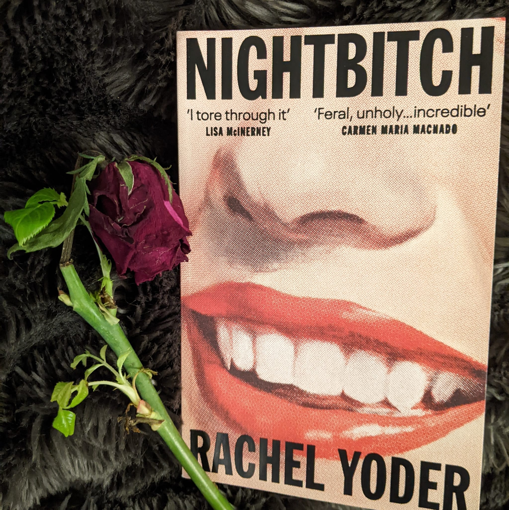
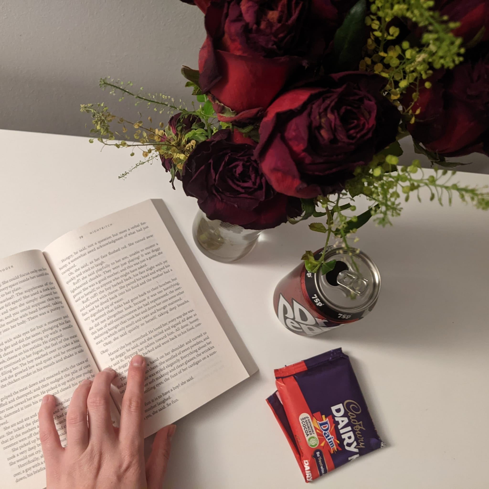

Nightbitch
by Rachel Yodder
Nightbitch is intoxicating, spellbinding, infuriating. It's a rapacious reading of what motherhood, womanhood feels like, in a day and age where women are expected to carry on their shoulders every possible full-time job one could concieve of.

Nightbitch weaves in stories from the narrator's past and the Field Guide she's currently reading to the overarching narrative perfectly. You develop an appetite for more of Yodder's beautiful, lyrical writing, which flows between timelines seemingly effortlessly. This novel begs to be read whilst lounging decadently in a robe, face mask on, chocolate to hand, flowers (bought, unasked) on your nightstand in the candelight. Yodder's perspectives on capitalism are transparent yet refrain from being preachy; her man vs. nature conflict likewise featuring a clear winner. The mother's relationship developments with her mother, her son, her friends, Jen--they feel alive. The characters themselves are immediately comfortable, unique, and identifiable, with strong grounding elements despite the novel's minimalistic style (except, of course, for when you aren't meant to see them as individuals, and they stand for larger metaphors for women or society at large).
This must be what it means to be an animal, to look at another and say, I am so much that other thing that we are part of one another. Here is my skin. Here yours. Beneath the moon, we pile inside the warm cave, becoming one creature to save our warmth. We breathe together and dream together. This is how it has always been and how it will continue to be. We keep each other alive through an unbroken lineage of togetherness.
--Rachel Yodder, Nightbitch

Nightbitch's style lends itself to questioning, is it just another millennial novel? It follows the stylistic rules, it contains that yearning dread--check and check. But, as some of the Rooney-like-ilk that define the millennial novel, is it too flat? Not intersectional enough? Does it actually provide a critique of society, or is it just the same, rote, boring minimalism? I don't think so--arguments could be made for flatness, and I do think you absolutely get what it says on the tin, but I think the inclusion of fairy-tale like elements keeps it interesting, and a cut above the rest. It stands above being derivative. (Frankly, maybe I'm just feeling feral enough these days myself that it doesn't matter even if it wasn't a cut above the rest--working through the conclusion of my PhD, I am increasingly jealous of Nightbitch's transformations.)

To what identities do women turn when those available to them fail? How do women expand their identities to encompass all parts of their beings? How might women turn to the natural world to express their deepest longings and most primal fantasies?
--Rachel Yodder, Nightbitch
I was tempted to say I disapproved of the ending--from the beginning I yearned for more violence against more of the characters. Nightbitch reaches an equilibrium I didn't anticipate, an ending I initially saw as cowardly. But if this is fantasy, let this be fantasy: where you can ask of your loved ones, please, please do better--and they say, unequivocally, without strife, I see what you have done and I will honour that. Perhaps Nightbitch will function as one of the mirrors we need to hold ourselves up to, to see the ugliness of that being rendered as fantasy, so that our shame may become self-awareness, our guilt may become ambition.
Read this and enjoyed it?
- Build Your House Around My Body has a very similar great use of magic realism and themes of feminine rage.
- Let me know what you thought and your analysis, and let’s spark a conversation!